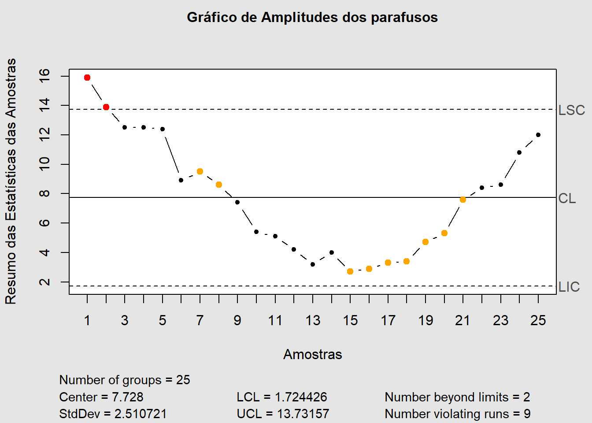
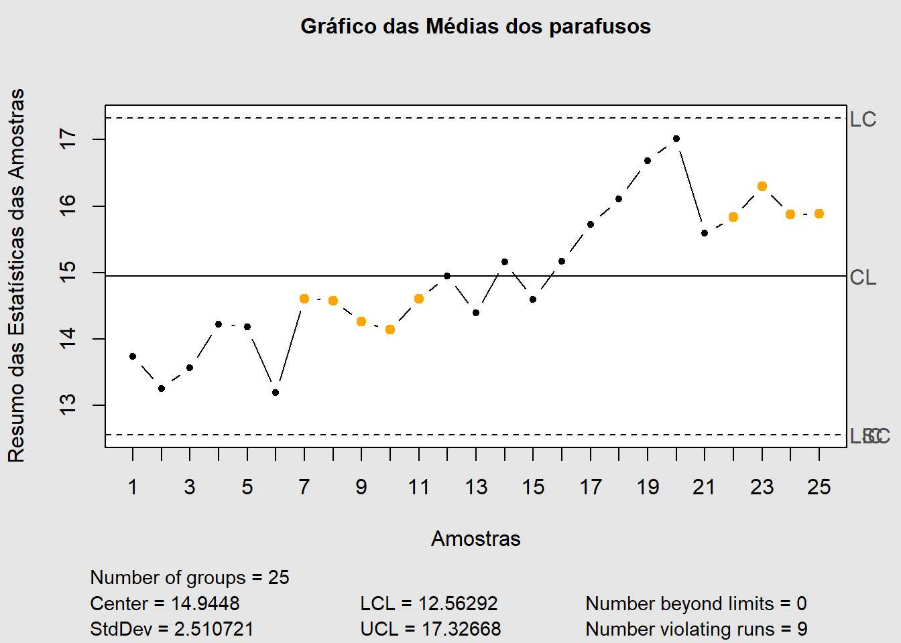
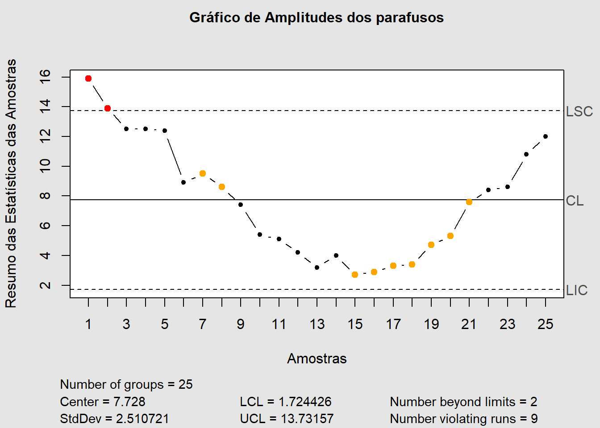
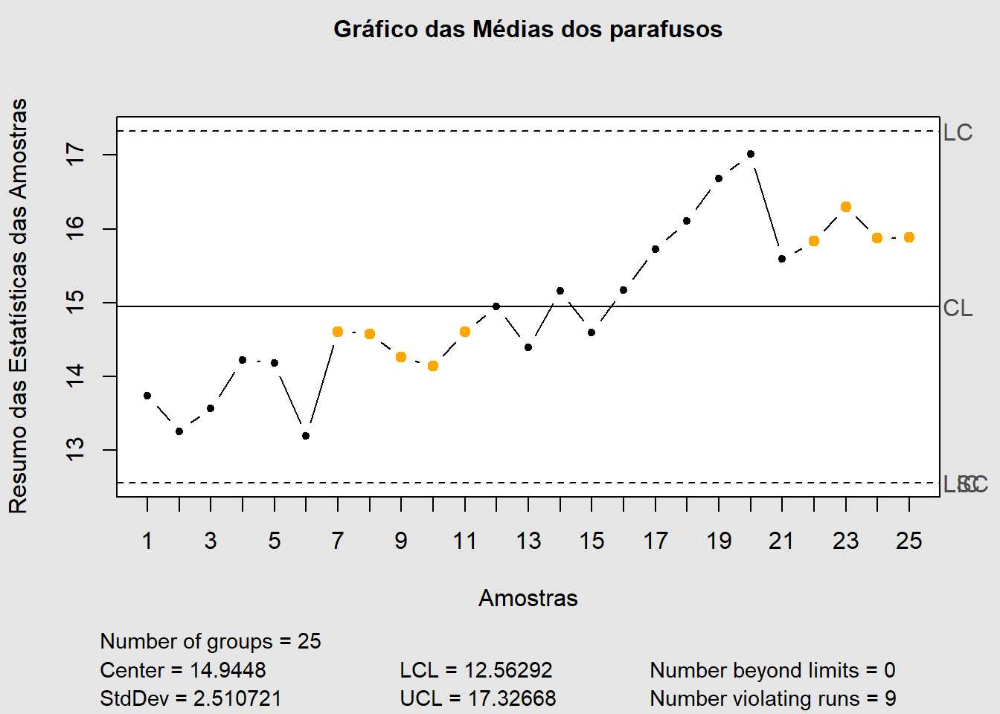
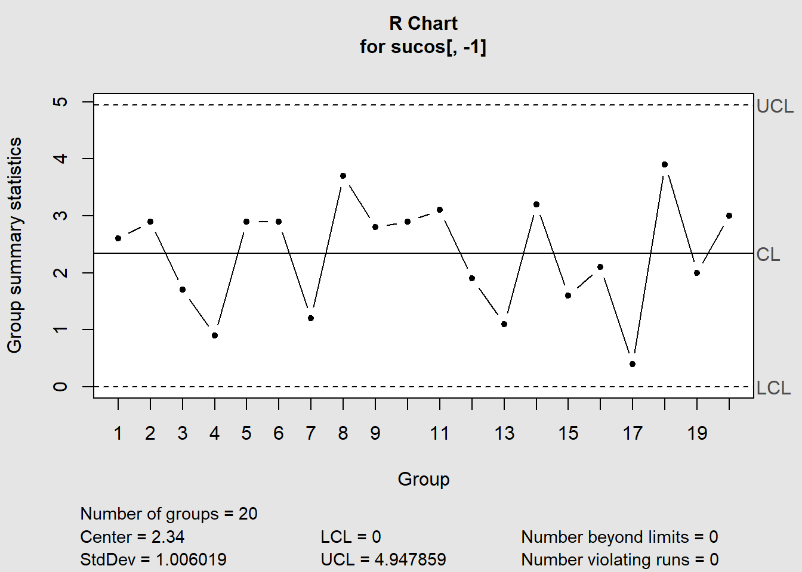
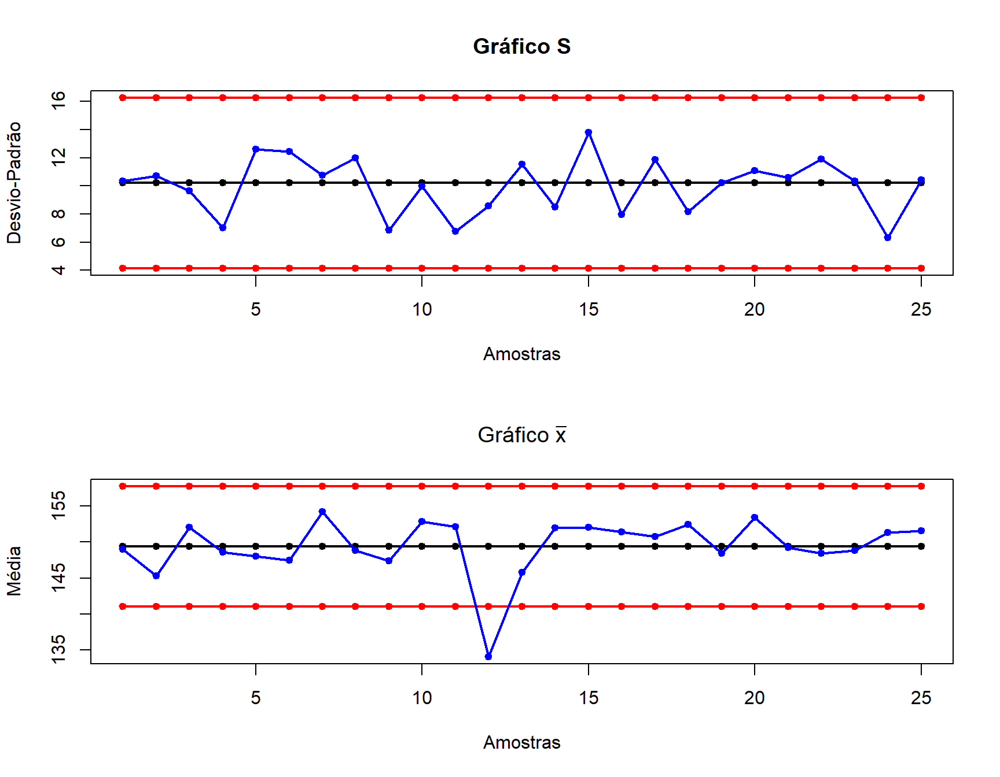

O presente documento visa trazer as resoluções da segunda lista de exercícios da disciplina MATD64 - Controle Estatístico de Processos (CEP), trabalhando com os gráficos de controle de Shewhart a fim de se identificar as condições dos processos baseados nas amostras disponibilizadas nos bancos de dados fornecidos e problemas propostos.
O diâmetro de um parafuso de aço é um parâmetro importante da qualidade. Dados sobre o diâmetro (em milímetros, mm) são apresentados para 25 amostras de 9 parafusos cada (ver arquivo parafusos.xls).
Em reposta ao item a da primeira questão da lista, seguem os gráficos de amplitude (R) e da média (\(\bar{X}\))


Examinando o controle estatístico, com base nas Regras Sensibilizantes (Regras de Nelson - 1984), é possível constatar:
Uma empresa quer monitorar a quantidade (em mililitros, ml) de suco presente nas garrafas que comercializa. Para tanto, selecionou 20 amostras de tamanho 5. Sejam os valores de referência: \(\mu\) = 500 ml e \(\sigma\) = 0,5 ml. Construa gráficos de controle para a média e a variabilidade da quantidade de suco nas garrafas, considerando e também desconsiderando as especificações. Compare os gráficos obtidos segundo estas duas abordagens e, em seguida, conclua.
SOLUÇÃO:
Tendo em vista a pequena quantidade de observações por amostra, o gráfico mais recomendado é o Gráfico R para análise solicitada.
Não sendo identificado nenhum alarme falso nem no gráfico R nem no gráfico \(\bar{X}\), foi construída a Figura 2 com os gráficos sem especificações, sendo estes gráficos equivalentes aos gráficos com especificações, exceto pelas pequenas mudanças listadas na Tabela 1.

Uma empresa deseja monitorar a pressão tolerada pelas garrafas plásticas que comercializa, visando identificar se dispõe de condições para manter um padrão de qualidade que não se altera ao longo do tempo. Para isso, utiliza 25 amostras de tamanho 14. A empresa deseja saber se todas as garrafas plásticas suportam a mesma pressão média e se a variabilidade da pressãotolerada por tais garrafas é a mesma para todos os lotes comercializados. Além disso, há interesse no monitoramento da produção futura.
SOLUÇÃO:
Tendo em vista que a quantidade de observações por amostra é maior que 10, o gráfico Gráfico S é o mais recomendado para análise solicitada.

Uma empresa de fast-food deseja verificar se o tempo demandado a partir do momento da solicitação até o momento em que o pedido é entregue é uma variável com média sob controle. Em outras palavras, a empresa deseja saber se o tempo médio até que seja feita a entrega é o mesmo para qualquer um de seus clientes ou se, dependendo do momento em que é feito o pedido, esse tempo é maior. São observados os tempos de entrega (em segundos, s) dos pedidos para os últimos 30 clientes atendidos pela empresa.
Amostras de tamanhos variáveis (n entre 5 e 8) são extraídas de um processo manufatureiro a cada hora. Uma característica de qualidade (normalmente distribuída) é medida para 25 amostras coletadas.
(Cano et al., 2012) In the construction of a building, a critical to quality (CTQ) characteristic might be the fulfillment of a deadline, as unfulfillment can lead to failure. The Six Sigma team identified the following events that can cause a delay in the schedule: weather, errors in planning, delay of suppliers, inadequate operators, customer specifications/delays, defects in materials, and permissions.
Create a cause-and-effect diagram such that:
Effect: “Delay”
Groups: “Personnel”, “Weather”, “Suppliers”, “Planning”
Causes[1]: “Training”, “Inadequate”
Causes[2]: “Rain”, “Temperature”, “Wind”
Causes[3]: “Materials”, “Delays”, “Rework”
Causes[4]: “Customer”, “Permissions”, “Errors”
(Cano et al., 2012) The Black Belt in the construction company of the previous example has investigated why a sampling of deadlines on projects developed in the last 2 years went unfulfilled. He has also estimated the cost of these delays for the company (larger labor force, extra payments, etc.). The number of unfulfilled deadlines and estimated cost are:
Count: 5, 1, 3, 1, 2, 18, 20, 4, 15, 2, 4
Cost: 50, 150, 50, 10, 20, 180, 200, 10, 5, 20, 150